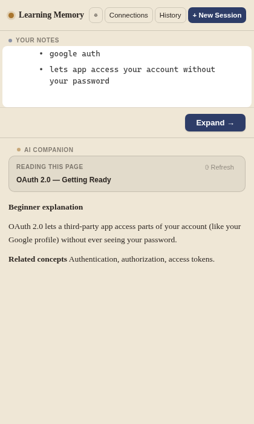
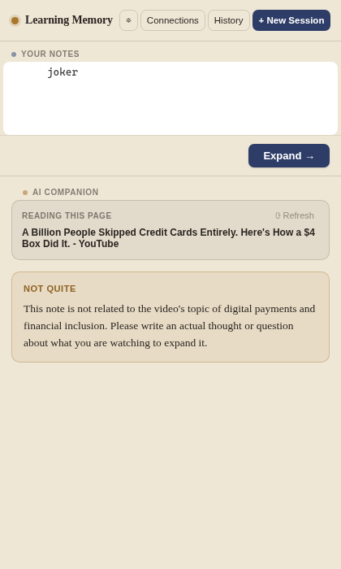
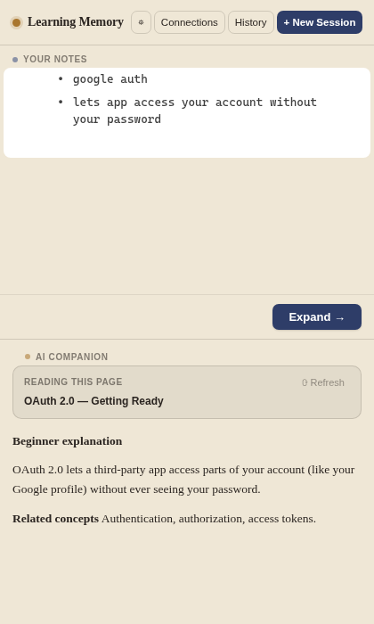
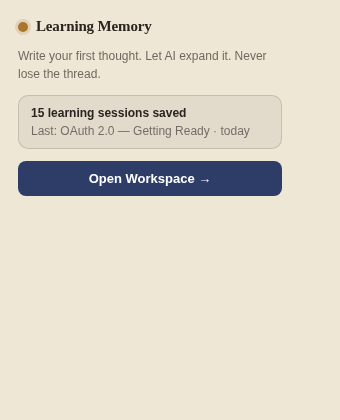

Learning Memory doesn't summarize the page for you. You write the rough thought first — even a fragment — and it builds on exactly that, grounded in what you're reading.

"AI should never replace your first thought." Most AI tools fix scattered learning by auto-summarizing everything — so you never actually engage with the material. This does the opposite: the AI only acts after you start writing.
Every feature below is implemented and verified working — not a roadmap.
Context-aware notebook
Captures the page title and any text you've highlighted automatically when you start a session — no manual copy-pasting.
Grounded AI expansion
Gemini reads your rough note, the page, and your highlight, then returns a beginner explanation, technical detail, example, common mistakes, and related concepts — built on what you wrote, not a page summary.
Pushes back on off-topic notes
If your note has nothing to do with the page, it says so directly instead of forcing a connection — a distinct gold callout, not a normal expansion.
Recall banner
When a new session's concepts overlap something you explored days ago, it surfaces that past session by name — automatically, without you searching for it.
Connections view
Groups every session by shared concept tag into a map of related learning, instead of a flat, forgettable list.
Local-only, private by default
Runs entirely in chrome.storage.local — no account, no backend. The only
network call is the page title, your note, and highlight going to Gemini for expansion —
never the URL.



This is a Chrome extension, not a hosted web app — it runs inside your browser, so there's no URL to visit. Load it locally in under a minute:
git clone https://github.com/tiemytime/memoir.gitpnpm install && pnpm buildchrome://extensions, enable Developer mode, click
Load unpacked, and select the dist folder.